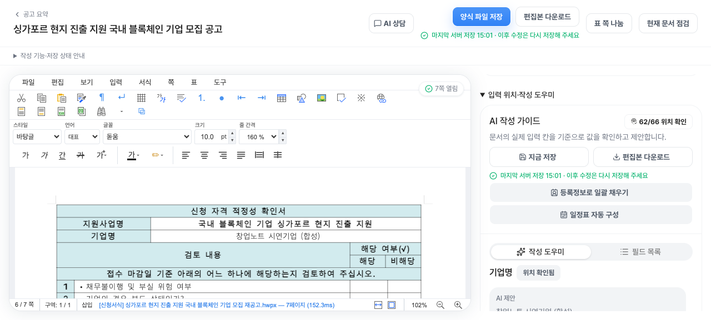
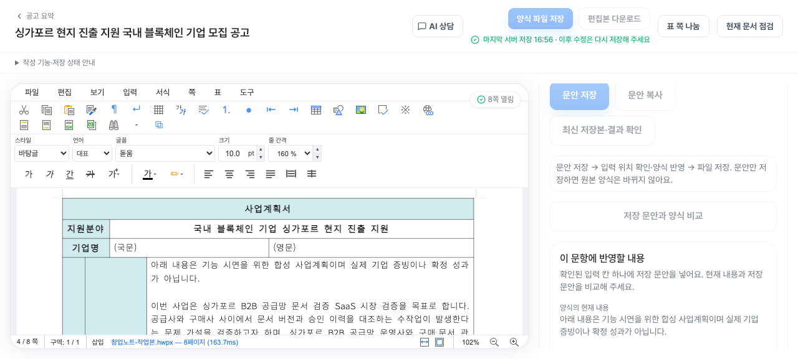

문안과 원본의 정확한 일치
소개 343자·계획 962자를 native 문단으로 다시 읽어 서버 저장본과 비교했습니다. 지정된 두 셀 외 512셀, 표의 행·열·병합과 비표 본문이 보존됐습니다.
native 검증 JSON →PRESENTER GUIDE / 약 7분 권장
담당자는 아래 버튼을 순서대로 누르세요.
회사 조건 → 신청서 → 검토한 문안 → 다운로드 → 다시 열기.
10월 1일 실제 운영 인수 기록에 기반한 가이드입니다.
지금의 서비스 상태를 자동으로 조회하거나 변경하지 않습니다.
담당자용 · 로그인은 화면 공유 전에
“10월 1일 저장·검증한 결과 화면으로 이어서 보여드리겠습니다.”라고 말하고 해당 단계의 ‘예비 화면’을 누르세요. 시간이 부족하면 02 조건 → 07 문안 → 10 다시 열기만 진행합니다.
새 시연에서도 같은 회사·같은 초안으로
합성 시연 기업은 경기 소재 소프트웨어 중소법인입니다. 직원 5명, 업력 24개월, 연 매출 1억 2천만원의 설정으로, 블록체인 기반 B2B 공급망 문서 검증 SaaS의 시장 검증을 계획했습니다.
사업 설명 8항목과 신청 전용 소개 자료 1개를 저장했습니다. 계약 고객·수출·현지 파트너·MoU는 없는 설정이며 특허·인증·검증된 성능을 주장하지 않습니다.
첨부 원문 신청 마감: 2026.10.08 14:00 KST.
역사 DB 기한 표기와 원문 기한의 불일치 기록이 있어 원문을 기준으로 안내합니다. 현재 모집 여부는 공고 화면에서 확인하세요.
현재 초안에는 등록정보와 소개·사업계획이 이미 반영돼 있습니다. 17개 자동입력을 다시 실행하거나 기존 문안을 다시 덮어쓸 필요가 없습니다. 새 AI 요청은 승인된 예산 범위를 확인한 뒤 정상 UI에서만 선택적으로 실행하며 비용이 발생합니다. 이 HTML은 요청을 자동 실행하지 않습니다.
약 7분 · 저장된 결과를 따라가는 시연
이 인쇄본의 PASS는 2026년 10월 1일 인수 기록입니다. 새 리허설 진행 상태는 포함하지 않습니다.
이미지를 열면 원본 크기로 볼 수 있습니다



오프라인 파일 · 원문 문안이나 인증 정보를 요청하지 않습니다
소개 343자·계획 962자를 native 문단으로 다시 읽어 서버 저장본과 비교했습니다. 지정된 두 셀 외 512셀, 표의 행·열·병합과 비표 본문이 보존됐습니다.
native 검증 JSON →정상 신청 관리 링크로 복귀한 동일 draft에서 문안을 확인했습니다. 최종·재열기·제공 파일은 같은 bytes/SHA입니다.
재열기 JSON → · 서버 head JSON →준비 영수증 v2는 싱가포르의 실제 인수와 한남의 직접 편집 기준선을 구분합니다. 전체 문항 작성이나 제출 완료로 확대하지 않습니다.
완료 영수증 JSON → · 시나리오 원문 →승인 상한 $20. reported 추정 $0.7996601과 미확인 예약 $9.9825089를 합쳐 $10.782169로 관리했습니다. 청구서 대조는 미완료입니다.
예산 상태 JSON →파일명: 창업노트-싱가포르-시연-20261001.hwpx · 101211 bytes
저장 시각: 2026.10.01 16:56:35.415 KST · revision 61cb04e7-9ef0-4d42-8f03-232e0a41e988
SHA-256 · a0cd52ea335711614ba0074d9aeae5fa1c567481571965fa906a4dfe098ab17eIR 파서의 합친 텍스트는 문단 줄바꿈 처리로 342/959자로 표현됩니다. 실제 native 문단 비교에서는 저장된 343/962자와 정확히 일치했습니다.
검증된 두 문항과 남은 입력 계약
회고 덱은 2026.10.01 09:26 KST 스냅샷입니다. 같은 날 오후 시연의 후속 성공이 반영된 덱으로 소개하지 않습니다. 오후의 실제 인수 기록은 이 가이드와 연결된 증거를 기준으로 읽어 주세요.